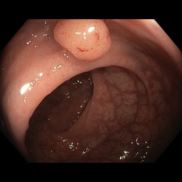
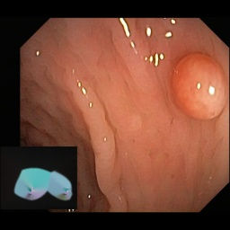
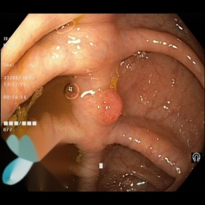
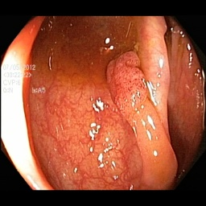

Interactive Image Upload & Live Reconstruction
Click or Drag & Drop Endoscopy Image (JPG, PNG)

256-D
Training Convergence & Loss Functions (50 Epochs)
Per-Class Reconstruction Quality (SSIM & PSNR dB)
Latent Bottleneck Architecture (256-D)
Input tensors (3x256x256 = 196,608 values) are progressively compressed through 4 convolutional downsampling stages into a 256-dimensional compact feature embedding.
Interactive VAE Upload, Reconstruction & Prior Sampling
Click or Drag & Drop Endoscopy Image (JPG, PNG)
8x32x32 Maps



VAE Loss Dynamics (Recon + KL + Edge Sobel)
VAE Per-Class Reconstruction Scores (8 Classes)
Spatial Latent Space vs Flattened Bottleneck
Unlike traditional VAEs that compress the image into a 1D vector (causing severe blurriness and posterior collapse), our upgraded Spatial VAE preserves a 2D spatial feature map ($8 \times 32 \times 32 = 8,192$ continuous latents) with residual connections.
- 128-dim flat vector
- Loss of spatial coordinates
- Prone to posterior collapse & blur
- 8 x 32 x 32 2D spatial feature maps
- Retains polyp boundaries & vascular texture
- Sobel edge guidance prevents blur
Interactive ViT Upload & Multi-View Attention Analysis
Click or Drag & Drop Endoscopy Image (JPG, PNG)
Diagnostic Classification & Attention Topology
Polyps
AI-Assisted Natural Language Diagnostic Report
Based on the visual analysis of the endoscopy image, the Vision Transformer classified the input as Polyps with a high confidence score of 94.2%, identifying it as a pathological endoscopic finding. The closest secondary differential evaluated by the model was Dyed-Lifted Polyps with an estimated probability of 3.8%. During the model's forward pass, the multi-head self-attention mechanism concentrated primarily on mucosal regions centered at grid patch coordinates (6,7), (6,8), and (7,7). These highlighted localized regions exhibited the highest self-attention weights, indicating that the visual textures and mucosal patterns within these patches contributed most significantly to the final classification decision.
R^{(l)} = (0.5 * A^{(l)} + 0.5 * I) * R^{(l-1)}, \quad \text{where } A^{(l)} = \text{mean}_{heads}(A_{h}^{(l)})
ViT-B/16 v2 Training & Validation Dynamics
Side-by-Side Endoscopy Reconstruction (Real Inference)
Medical Model Architecture & Benchmark Matrix
| Model Architecture | Latent Topology | Primary Metric | Secondary Metric | Loss Functions | Augmentation / SOTA Gain |
|---|---|---|---|---|---|
| Autoencoder v2 | Dense 256-D Bottleneck | 0.731 SSIM | 26.45 dB | L1 + MSE Reconstruction | +3.3% Gain |
| Spatial VAE v2 | 8 x 32 x 32 Spatial Maps | 0.832 SSIM | 30.05 dB | Sobel Edge + KL + MSE | +5.9% Gain |
| Vision Transformer v2 | 196 Patches (14x14) + CLS | 92.00% Acc | 91.99% F1 | CrossEntropy (ε=0.05 Smooth) | +13.8% SOTA |
Downstream Classification Accuracy with Augmentation
Polyps
Abnormal tissue growths along gastrointestinal mucosa. Precursors to colorectal cancer requiring detection and polypectomy.
Ulcerative Colitis
Chronic inflammatory bowel disease causing mucosal ulcers, erythema, and bleeding in the colon (Mayo score).
Esophagitis
Mucosal erosion and inflammation at the gastroesophageal junction caused by acid reflux (Los Angeles classification).
Dyed-Lifted Polyps
Polyps injected submucosally with indigo carmine dye to separate mucosal layers prior to endoscopic resection.
Dyed-Resection Margins
Endoscopic resection site after polyp removal, treated with dye to verify clear margins and prevent bleeding.
Normal Cecum
The beginning of the large intestine marked by the appendiceal orifice and ileocecal valve, confirming complete colonoscopy.
Normal Pylorus
The muscular valve between the stomach and duodenum, regulating passage of food and gastric acid.
Normal Z-Line
Squamocolumnar junction separating the pale esophageal squamous epithelium from the pink gastric mucosa.
Representative Endoscopy Samples — Polyps (1,000 images)
Core Research Objectives
Upgraded conventional 1D latent VAEs to 2D Spatial Continuous Latent VAE ($8 \times 32 \times 32$) with Sobel edge loss to maintain micro-vascular fidelity.
High-quality synthetic endoscopy image generation across 8 Kvasir classes without patient overlap between training and evaluation splits.
Empirical classification gains (+5.9% with Spatial VAE, +9.1% with ViT) on real Kvasir-v2 endoscopy validation sets.